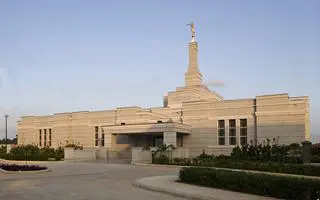

Understanding Art Direction
Art direction isn't just about resizing; it's about cropping images so the focus remains on the important subject regardless of screen size.

Art direction isn't just about resizing; it's about cropping images so the focus remains on the important subject regardless of screen size.